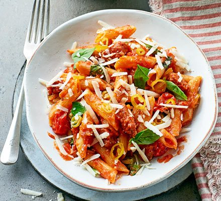

Chorizo Pasta

My Chorizo pasta dish (one i made earlier)
This is a really nice dish of paprika smoked flavours. It is quick and easy and of course not healthy whatsoever because chorizo contains so much salt
Ingredients
- Pasta 75g (uncooked)
- Chorizo 50g
- Paprika smoked
- Garlic clove
Steps
- Weigh the pasta
- Boil the kettle
- Pour the water into the pan
- Add the pasta and let it boil for 10 mins
- Use your common sense